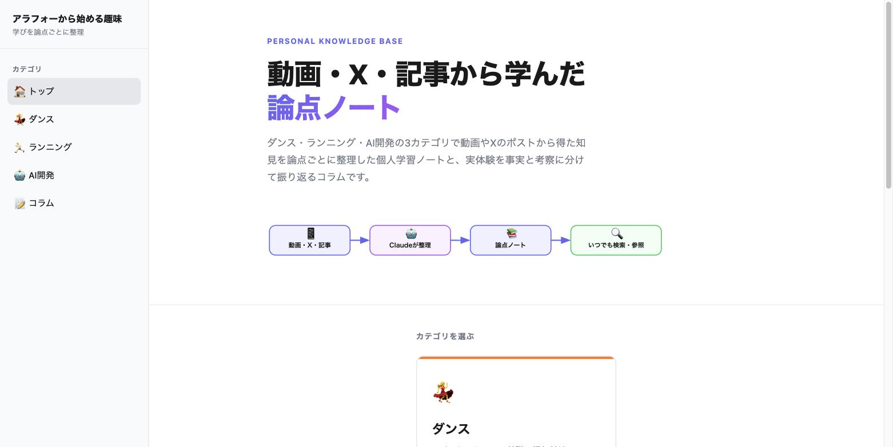
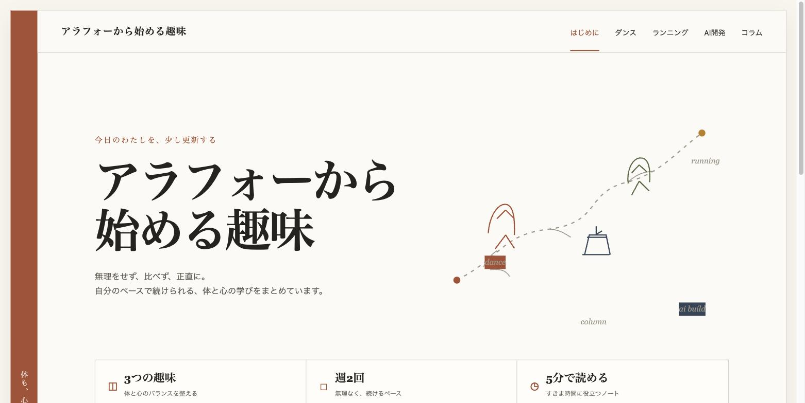
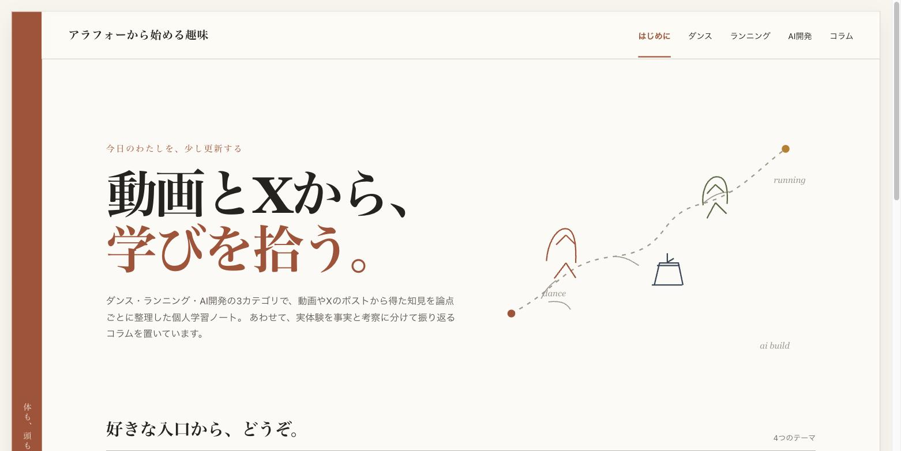

- 個人サイトの見た目づくりを、普段使っているのとは別のAIサービスに外注した。デザインは明確に良くなった
- ただし初版には、実際には存在しない数字が混ざっていた。気づかず公開していれば、嘘の情報を載せるところだった
- 外注で買えるのは「見た目」まで。「事実の正しさ」は受け取る側が担保するしかないと考えられる
自分のサイトが、どうにも「AIが作りました」という顔をしていました。
絵文字が並び、紫のグラデーションがかかり、角の丸いカードが整列している。よくある見た目です。
この記事は、その見た目を別のAIに作り直させた記録です。良かった点と、危なかった点の両方を書きます。
背景
私はプログラミング初心者で、コードはAI（Claude）に書いてもらっています。
そのAIに「デザインも良くして」と頼むと、どうしても無難で没個性な見た目に寄っていきます。これは「AI slop」と呼ばれる現象で、私の指示が甘いせいでもあります。
そこで、0→1のデザインだけを別のAIサービス（Manus）に任せる運用を決めました。
役割分担はこうです。前工程（デザインの初版づくり）は外部のAI、本工程（中身の配線・安全確認・公開）は手元のAI。
作らせたものを、そのまま本番に入れないことを条件にしました。
事実：3件の外注で起きたこと
ここは「起きたこと」だけを書きます。評価は次の章から。
詳しく
- 渡すのは「見た目の殻とダミーデータ」だけ。実データ・個人情報・認証情報は渡さない
- 成果物は必ず手元に保存する。相手のサーバーに置いたままにしない
出典: 作業日報 2026-08-13
詳しく
ダミー情報だけのブリーフでUI初版を作らせ、受け取ってから実データに差し替えました。
出典: 作業日報 2026-08-13
詳しく
初版に「GPSの停止時間」「1kmごとのラップ」という項目が入っていました。
どちらも私の記録データには存在しない項目だったため、その表示ごと破棄しています。
出典: 作業日報 2026-08-13
詳しく
初版は1ファイル486行。外部から読み込むデータは0件で、その点は安全でした。
一方で、全記事に共通の固定の読了時間と、根拠のない利用頻度の数字が埋め込まれていました。
出典: 作業日報 2026-08-13
詳しく
受け入れテスト15件すべて合格。記事データのファイルは1バイトも変更していません。
出典: 作業日報 2026-08-13
見た目の変化



2枚目の画像の下のほうに、「週2回」「5分で読める」という数字が並んでいるのが見えます。
これは私が一度も伝えていない数字です。
分析：受け取ったものの仕分け
初版を、項目ごとに3つに仕分けました。
| 受け取ったもの | 判断 | 理由 |
|---|---|---|
| 配色・書体・余白の設計 | 採用 | 没個性から抜けることが目的そのものだった |
| 手描き風の線画 | 採用 | 出来合いの素材にはない個性が出ていた |
| タグの絞り込み | 修正して採用 | 3つ決め打ちだったため、実データから作る形に直した |
| カードのクリック | 修正して採用 | 見た目だけのボタンだったため、本物のリンクに直した |
| ページの仕組み（URL） | 破棄 | 採用すると公開済みのページのURLが全部切れる |
| 読了時間・利用頻度の数字 | 破棄 | 元データに存在しない数字だった |
破棄した2件は、どちらも「見た目としては正しく、事実としては間違っている」ものでした。
考察：ここからは私の解釈
-
AIは、空欄を「それらしく」埋める
デザインの完成度を上げようとして、数字の入る場所に架空の値を置いたのだと考えられます。悪意ではなく、埋めたほうが見栄えがするからでしょう。 -
危ないのは、嘘が目立たない場所に入ること
今回の架空の数字は、見出しではなく一覧の隅の小さな文字でした。派手な間違いなら気づけますが、小さな装飾は読み飛ばしやすいと思われます。 -
検収の勘所は「この項目は実在するか」の照合
デザインの好き嫌いを議論する前に、表示される項目を1つずつ元データと突き合わせるほうが効きそうです。存在しない項目に依存した機能は、デザインごと落とすのが安全だと考えられます。 -
外注の線引きは「対外的・使い捨て・非機微」
見せ物としての初版は外に出せます。一方で、長く育てるもの・自分でメンテするもの・機微なデータを扱うものの中身は、手元に置いたほうが安全だと言えそうです。
この記事の限界
- 私1人・1サービス・3案件だけの記録です（n=1）。他のサービスでも同じ傾向が出るかは分かりません
- すべて同じ日の出来事で、長期間運用したときの手間やコストは分かっていません
- 私はプログラミング初心者で、コードの良し悪しの判断はAIの補助を受けています
- 「デザインが良くなった」の判断は私の主観です。第三者の評価は取っていません
まとめ
外注してよかったか、と聞かれれば、よかったと答えます。
自分ひとり（と手元のAI）では、この見た目にはたどり着けませんでした。
ただし受け取ったものをそのまま使っていたら、私のサイトには嘘の数字が並んでいました。
外注で買えるのは見た目まで。事実の正しさは、受け取った側が確かめるしかない。 今回いちばん学んだのはここでした。